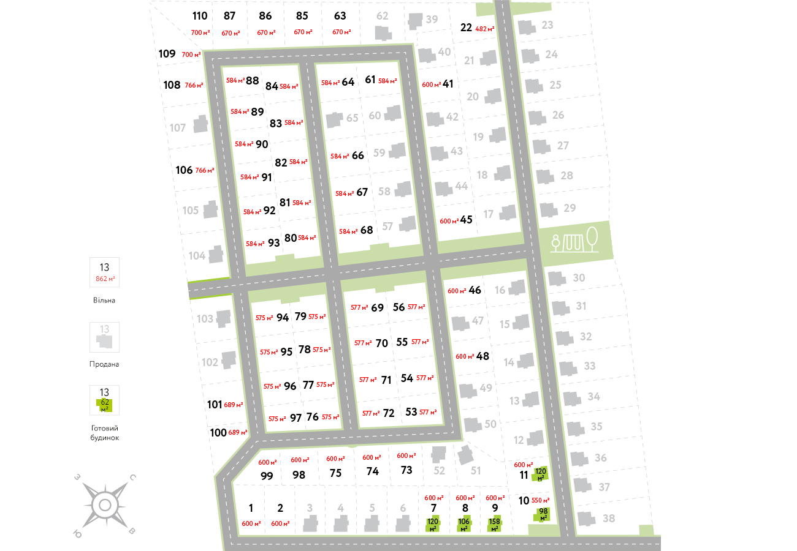

Генеральний план
Котеджне містечко «Сім озер» розташований в селі Крушинка Васильківського району. Від Києва він знаходиться на відстані 19 км - всього 20 хвилин їзди по Одеській трасі. Купити недорого будинок тут можна як для заміської дачі, так і для постійного проживання.
Свіже повітря, мінімальний рівень шуму і навколишнє природне краса - головна перевага котеджного містечка «Сім озер». Не складно здогадатися, що його назва походить якраз від семи водойм, які розмістилися на відстані від 520 м до 2 км. Озера недалеко від будинку дають можливість в будь-який час відпочивати біля води: рибалити, плавати, засмагати на пляжі, грати в водні ігри, кататися на човні влітку і на ковзанах взимку. Словом, варіантів для сімейного відпочинку маса.
Будинки в котеджному містечку побудовані за двома технологіями: канадська (каркасні будинки з SIP-панелей) і з газоблоку. Обидва матеріали є енергоефективними, тому влітку і взимку в такому будинку буде комфортна температура. Завдяки цьому ви значно заощадите на оплаті за опалення в холодну пору року.
На свій смак ви можете вибрати площа будинку: від 35 до 159 м². Ми пропонуємо 12 типових проектів одно- і двоповерхових котеджів з різними плануваннями. Ви вибираєте той, який більше підходить саме для вашої родини. Співвідношення ціна-якість в даному випадку ідеальне. Адже доступна вартість будинків в котеджному містечку «Сім озер» разом з усіма природними благами, які знаходяться поруч, - краща пропозиція покупки будинку під Києвом.
Хочете переконатися в цьому особисто? Запишіться на перегляд будинків прямо зараз!